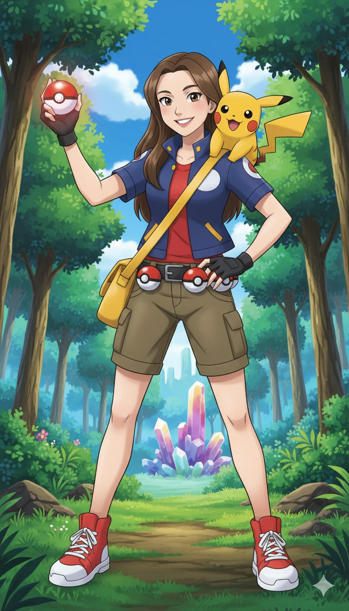

Pokémon

Elegí este anime porque fue el primero que vi desde el capítulo 1. Se estrenó en el canal Cartoon Network en 1998, cuando tenía 5 años.
Hasta ese momento miraba dibujos animados como Tom y Jerry que, al menos en televisión, no era necesario seguir los capítulos en orden cronológico porque la serie no perdía el sentido.
Sitios con información adicional sobre Pokémon
Enciclopedia con información actualizada